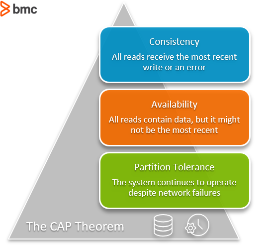
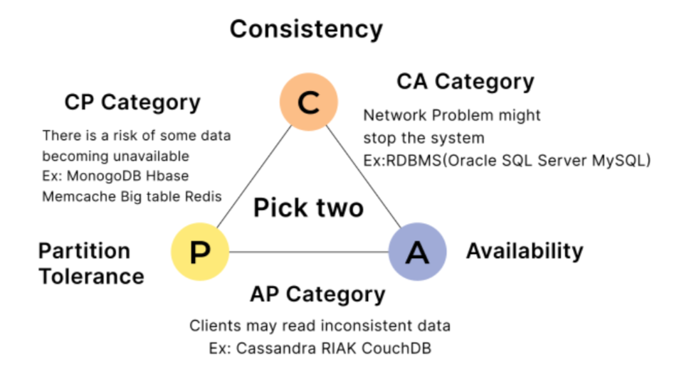

System Design Mastery
Master scalable systems with premium insights
⚖️ CAP Theorem ( Brewer's Therom ): The Fundamental Trade-off in Distributed Systems
1️⃣ What is CAP Theorem?
CAP Theorem states that in a distributed system, you can guarantee only two out of these three properties at the same time.
C — Consistency
All users see the same data at the same time.
A — Availability
System always responds to requests (success or failure).
P — Partition Tolerance
System continues working even if network failures occur.
👉 Critical Rule: You cannot have all three simultaneously.

CAP Theorem Venn Diagram
2️⃣ Why Does CAP Theorem Exist?
CAP exists to explain trade-offs in distributed systems. When systems are spread across multiple servers, regions, and networks, network failures are unavoidable.
Problems in Distributed Systems:
- 🌐 Multiple servers across regions
- 📡 Different networks with different speeds
- ⚠️ Network failures are inevitable
- ❓ How to choose what to sacrifice?
CAP helps engineers make the right trade-off decision.
5️⃣ Explain the Three Properties (Very Important)
🔹 Consistency (C)
All users see the same data at the same time.
Example:
- ✏️ You update your phone number
- 📱 Everyone sees the updated number immediately
🔹 Availability (A)
System always responds to requests (success or failure).
Example:
- ⚡ App replies to every request
- 📦 Even if data is slightly old
- 👉 No errors, no downtime
🔹 Partition Tolerance (P)
System continues working even if network failures occur.
Example:
- 🔌 Network issue between servers
- 🚫 Servers can't talk to each other
- ✅ System still continues
- 👉 Network failure does NOT crash system
📌 In real distributed systems, P is mandatory.
6️⃣ What Choices Do Systems Make?
Since P is unavoidable, systems must choose between CP or AP.
🔹 CP (Consistency + Partition)
Give correct data or error.
What Happens:
- ⏸️ Block some requests
- ⏳ Wait until data is consistent
Result:
- ❌ Some users get errors
- ✅ Data is always correct
Examples:
- 💳 Banking systems
- 💰 Payment systems
🔹 AP (Availability + Partition)
Always respond (available), but data might be temporarily incorrect.
What Happens:
- ⚡ Always respond
- 📦 Even if data is slightly outdated
Result:
- ✅ App is always up
- ❌ Temporary inconsistency
Examples:
- 💬 Social media
- 👍 Likes/comments
❌ Why NOT CA (Consistency + Availability)?
CA assumes no network failure, which is impossible in real distributed systems.
CA works only in:
- 🖥️ Single machine
- 🚫 Non-distributed systems
👉 That's why CA is not practical at scale.

CAP Theorem Systems Comparison
7️⃣ Real App Connections
💳 Payments (CP)
Better to fail than show wrong balance. Accuracy over availability.
🛒 E-commerce Cart (AP)
Slight inconsistency is acceptable. User experience matters.
💬 Social Media Feed (AP)
Likes count can be eventually consistent. Availability is key.
9️⃣ If NOT Strict Consistency, What Else?
🔁 Eventual Consistency
Data becomes consistent over time.
Used in AP systems.
Examples:
- 👍 Like counts
- 👀 View counters
🔁 Strong Consistency
Data is always correct immediately.
Used in CP systems.
Examples:
- 💳 Payments
- 🔄 Transactions
🧠 Key Interview Table
📱 CAP Theorem in WhatsApp (Real-World Example)
Why P (Partition Tolerance) Exists in WhatsApp:
- 🌍 WhatsApp servers are distributed globally
- 🔗 Internet cables can fail
- 🔌 Data centers can lose connection
- 👉 Network failure WILL happen
1️⃣ WhatsApp Chooses Availability (AP System)
This is what WhatsApp actually does.
What Happens During Network Failure?
- ✉️ You send a message
- ⚡ WhatsApp accepts it immediately
- ✔️ Message shows single tick
- ⏳ Server will deliver it later
✅ Benefits:
- App never feels down
- User experience is smooth
❌ Trade-off:
- Message delivery is delayed
- Temporary inconsistency
Why WhatsApp Chooses This:
User experience is critical. Users prefer delay over app not working.
2️⃣ If WhatsApp Chose Consistency (CP System) — Hypothetical
What Would Happen?
- 🔌 Network problem occurs
- ❌ You try to send a message
- 🚫 WhatsApp says "Service unavailable"
Result: App feels broken, but no inconsistent message state.
👉 Bad user experience.
💡 Very Simple Analogy
AP (WhatsApp)
Message sent now, delivered later
CP (Bank)
Either correct or don't allow transaction
🎯 Interview-Ready One-Liner
CAP Theorem states that a distributed system can guarantee only two out of Consistency, Availability, and Partition Tolerance during network failures.
💡 Pro Tip
In system design interviews, always remember:
- 🔹 Partition Tolerance is mandatory in distributed systems
- 🔹 Choose between CP or AP based on business needs
- 🔹 CA is unrealistic for distributed systems
- 🔹 Eventual Consistency is the bridge in AP systems